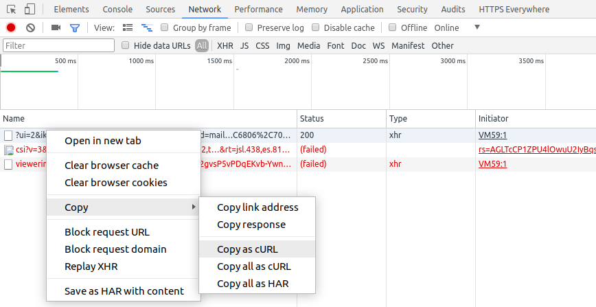

Convert Browser Requests To Python Requests For Scraping
4 min readScraping content behind a login page is bit difficult as there are wide variety of authentication mechanisms and web server needs correct headers, session, cookies to authenticate the request.
If we need a crawler which runs everyday to scrape content, then we have to implement authentication mechanism. If we need to quickly scrape content just for once, implementing authentication is an overhead.
Instead, we can manually login to the website, capture an authenticated request and use it for scraping other pages by changing url/form parameters.
From browser developer options, we can capture curl equivalent command for any request from Network tab with copy as cURL option.

Here is one such request.
curl 'http://avilpage.com/dummy' -H 'Cookie: ASPSESSIONIDSABAAQDA=FKOHHAGAFODIIGNNNDFKNGLM' -H 'Origin: http://avilpage.com' -H 'Accept-Encoding: gzip, deflate' -H 'Accept-Language: en-US,en;q=0.9,ms;q=0.8,te;q=0.7' -H 'Upgrade-Insecure-Requests: 1' -H 'User-Agent: Mozilla/5.0 (X11; Linux x86_64) AppleWebKit/537.36 (KHTML, like Gecko) Chrome/65.0.3325.181 Safari/537.36' -H 'Content-Type: application/x-www-form-urlencoded' -H 'Accept: text/html,application/xhtml+xml,application/xml;q=0.9,image/webp,image/apng,*/*;q=0.8' -H 'Cache-Control: max-age=0' -H 'Referer: http://avilpage.com/' -H 'Connection: keep-alive' -H 'DNT: 1' --data 'page=2&category=python' --compressed
Once we get curl command, we can directly convert it to python requests using uncurl.
$ pip install uncurl
Since the copied curl request is in clipboard, we can pipe it to uncurl.
$ clipit -c | uncurl requests.post("http://avilpage.com/dummy", data='page=2&category=python', headers={ "Accept": "text/html,application/xhtml+xml,application/xml;q=0.9,image/webp,image/apng,*/*;q=0.8", "Accept-Encoding": "gzip, deflate", "Accept-Language": "en-US,en;q=0.9,ms;q=0.8,te;q=0.7", "Cache-Control": "max-age=0", "Content-Type": "application/x-www-form-urlencoded", "Origin": "http://avilpage.com", "Referer": "http://avilpage.com/", "Upgrade-Insecure-Requests": "1", "User-Agent": "Mozilla/5.0 (X11; Linux x86_64) AppleWebKit/537.36 (KHTML, like Gecko) Chrome/65.0.3325.181 Safari/537.36" }, cookies={ "ASPSESSIONIDSABAAQDA": "FKOHHAGAFODIIGNNNDFKNGLM" }, )
If we have to use some other programming language, we can use curlconverter to convert curl command to Go or Node.js equivalent code.
Now, we can use this code to get contents of current page and then continue scraping from the urls in it.